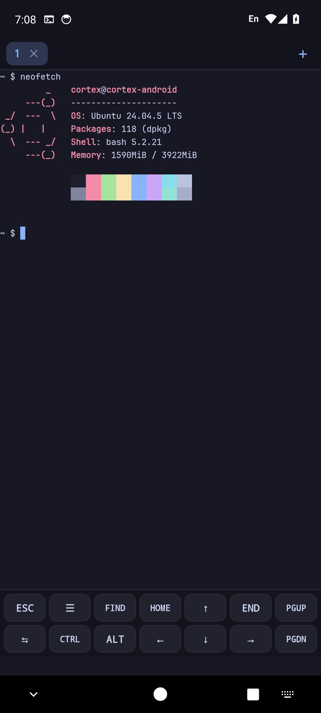
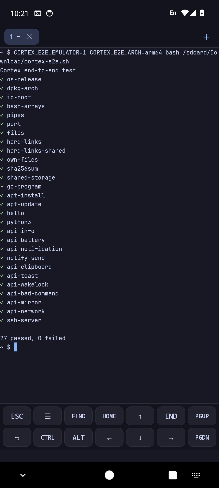
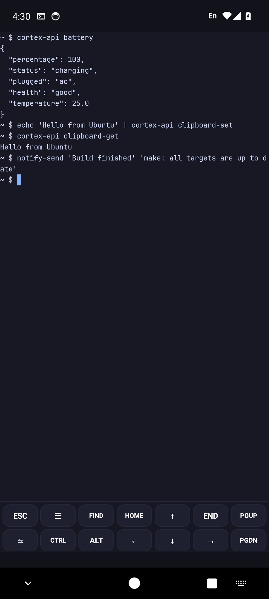
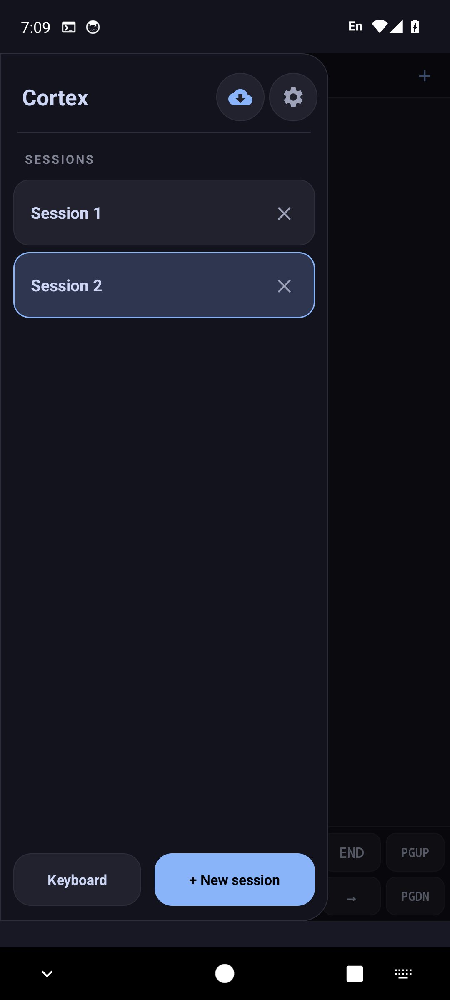
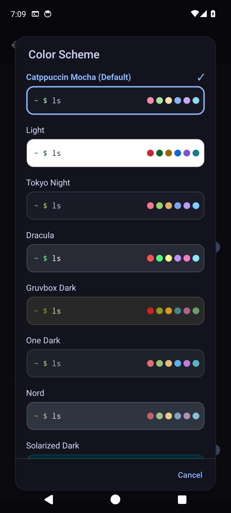

One thin layer, in the same process
Ubuntu's programs run on the Android kernel itself. A preloaded library inside each program maps /usr, /etc and friends into the app's private storage and answers the calls Android forbids an app. It is the same family as fakechroot, written for Android, so there is no ptrace stop and no virtual machine. Static programs never call that library, so Cortex patches them once before their first start.
Cortex
A program calls the kernel directly. Paths are rewritten in the same process, in user space.
PRoot
Every system call that takes a path stops the program and is handled by a second process, then resumed.
What you get
A real Ubuntu userland and a terminal made for a phone.
Ubuntu's own packages
Ubuntu's own .deb packages with glibc 2.39, installed with apt from the official archive.
No tracer
Programs run on the Android kernel itself. A preloaded library maps /usr, /etc and friends into the app's private storage, in the program's own process.
Built for developers
gcc, git, Python, Java 17, Node.js (apt or nvm) and more. Changed ~/.bashrc files are picked up at the next prompt.
Made for a phone
Session tabs and drawer, a key toolbar of your own, fourteen color schemes that theme the whole screen, search, clickable links and image paste.
Go programs just work
Single-file Go tools (gh, lazygit, fzf…) see Ubuntu's files and start Ubuntu's programs, with no root.
Terminal integration
Clipboard from tmux/vim (OSC 52), notifications when long commands finish, OSC 8 hyperlinks, bracketed paste, cursor shapes and synchronized output.
A desktop when you need one
An optional X11 desktop (Openbox or XFCE, and Firefox) installed with one tap and shown inside the app. Programs started in the terminal open on it.
Android from the shell
cortex-api shows notifications, uses the clipboard, opens links and files in Android apps, shares, reads the battery and speaks.
SSH and local servers
cortex-sshd to use Cortex from a computer, and a notification that opens npm run dev or python3 -m http.server in the browser.
Your files, safe
cortex-backup for backup and restore, sessions that come back after Android ends the app, and your home folder in Android's Files app.
Hardware keyboards
Ctrl, Alt and Shift work as in a desktop terminal: Ctrl+C, word jumps with Ctrl+arrows, selection with Shift, Meta on the left Alt, copy and paste shortcuts.
Root mode, if you want it
On a rooted phone, sessions can run as real root in a chroot of the same Ubuntu: mount, real chown and ports below 1024.
50 languages
The app follows your system language, from Arabic to Vietnamese, and lets you pick another one in Settings.
See it on a phone
Taken from the app running on an Android emulator in CI.





Cortex compared
Pick Cortex when you want Ubuntu's own packages and glibc without PRoot's tracer or a VM. Termux remains a great choice for its large, Android-specific package set. Don't take our numbers for it: this script runs the same tests in Cortex and in proot-distro on your own phone.
| Cortex | Termux (own packages) | Termux + proot-distro | Android Linux Terminal (VM) | |
|---|---|---|---|---|
| Needs root | No | No | No | No |
| How Linux programs run | Directly on the Android kernel, paths mapped by an LD_PRELOAD library (fakechroot's technique, rewritten for Android) | Directly, as programs built for Android | Inside PRoot, a user-space chroot using ptrace | Inside a virtual machine (supported devices only) |
| C library | glibc 2.39 (Ubuntu) | Bionic | glibc of the chosen distribution | glibc (Debian) |
| Package source | Ubuntu 24.04 archive via apt | Termux repositories via pkg | The distribution's own apt | Debian apt |
ptrace system-call overhead | None | None | Yes | None (VM overhead instead) |
| Statically linked programs | Patched once before their first start (static C/C++, Go 1.19+). Others run but see Android's paths | Built for Android | Covered by the tracer | Covered |
| What it cannot do without root | systemd, real other users, ports below 1024, mount, containers | The same | The same | Little, but only on supported phones |
Up and running in minutes
One APK, a one-time setup of the base system, then apt as on any Ubuntu.
- Open the release
Go to the latest release on GitHub.
- Pick your APK
Cortex-arm64-v8a-signed.apkfor 64-bit phones (almost all current ones),Cortex-armeabi-v7a-signed.apkfor 32-bit ARM. - Install and open
Allow storage access when asked and wait for the one-time base system setup.
- Install your tools
Use
aptlike on any Ubuntu system.
$ apt update
$ apt install git python3 build-essential openjdk-17-jdkQuestions
Does Cortex need root?
No. It runs on unrooted devices. On a rooted phone, the optional root mode (Settings) runs sessions as real root.
Is this just PRoot or fakechroot?
Not PRoot: nothing traces the programs. Close to fakechroot: in normal mode an LD_PRELOAD library maps paths such as /usr and /etc into Cortex's private storage and pretends to be root, which is exactly fakechroot's and fakeroot's technique. Cortex doesn't contain their code. It was written for what Android adds: the seccomp filter, no hard links, no SysV shared memory, no exec from app storage on new target levels, and static programs. The optional root mode on rooted phones uses a real chroot, without the library. The README lists what is real and what is emulated.
Can it break my phone?
No. In normal mode everything runs as the app's own Android user, inside the app sandbox, so it cannot touch Android, the system or other apps' private data. A broken package can break Cortex's own Ubuntu, and clearing the app's data gives you a fresh one. One thing to know: if you allow storage access, programs can change and delete your files in /sdcard like any file manager could, and neither clearing data nor uninstalling undoes that. Uninstalling removes everything in the app's own storage. Root mode is different, a root shell is a root shell. Details and the permission list: SECURITY.md.
How do I know the APK is the code on GitHub?
From 1.27.7 on, releases are built and signed by GitHub Actions from the tagged source, and each APK has a build attestation: gh attestation verify Cortex-arm64-v8a-signed.apk --repo ssfuisu/cortex shows the workflow and commit it came from. Checksums and the signing key are in signing/README.md.
How much slower is it than PRoot, or than nothing?
Code that doesn't call the kernel runs at full speed. Calls that take a path cost a few hundred nanoseconds more, and starting a program about a quarter of a millisecond. Run compare.sh in Cortex and in proot-distro on the same phone and compare for yourself.
Can I run Docker or Podman?
Only in root mode. Containers need namespaces, mounts and cgroups, which Android never gives an app. On a rooted phone root mode sets those up, and this guide has the steps.
Why does Go need special code?
Go programs don't use the C library, they call the kernel themselves, so a preloaded library never sees their calls. Cortex adds a small piece of code to Go 1.19+ programs before their first start that does the same path mapping. Static C and C++ programs only get their forbidden system calls patched.
Which Android versions and CPUs are supported?
Android 7.0 and newer, with separate APKs for 64-bit (arm64-v8a) and 32-bit (armeabi-v7a) ARM devices.
How do I install software?
Use apt like on any Ubuntu system. Installers such as nvm also work.
Is there a desktop or GUI?
Yes, as an add-on. The menu's Desktop button installs a light Openbox desktop or XFCE, and Firefox if you want it, and shows it inside the app with touch or touchpad control, the keyboard, a shared clipboard and sound. It is X11 drawn by the CPU, with no GPU and no Wayland, so it suits editors and browsing more than games.
Will every Ubuntu package work?
Most command-line tools do. Packages that depend on kernel features Android does not allow for apps, such as systemd services or privileged device access, cannot work. A nightly job installs and tests common packages, the latest results are on the compatibility page.
Which languages does the app support?
It follows your system language and offers 50 languages in Settings. The translations were made with machine assistance, so corrections are welcome on GitHub.
Where do I report problems?
On GitHub Issues or on Telegram.
Ubuntu in your pocket
Free and open source. Download the APK, run apt, and get to work.